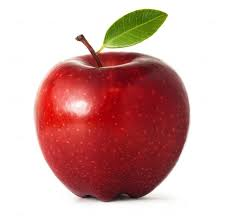

Apel
Apel adalah jenis buah-buahan, atau buah yang dihasilkan dari pohon buah apel. Buah apel biasanya berwarna merah kulitnya jika masak dan (siap dimakan), namun bisa juga kulitnya berwarna hijau atau kuning. Kulit buahnya agak lembek, daging buahnya keras. Buah ini memiliki beberapa biji di dalamnya.
Orang mulai pertama kali menanam apel di Asia Tengah. Kini apel berkembang di banyak daerah di dunia yang suhu udaranya lebih dingin. Nama ilmiah pohon apel dalam bahasa Latin ialah Malus domestica. Apel budidaya adalah keturunan dari Malus sieversii asal Asia Tengah, dengan sebagian genom dari Malus sylvestris (apel hutan/apel liar).
id.wikipedia.org